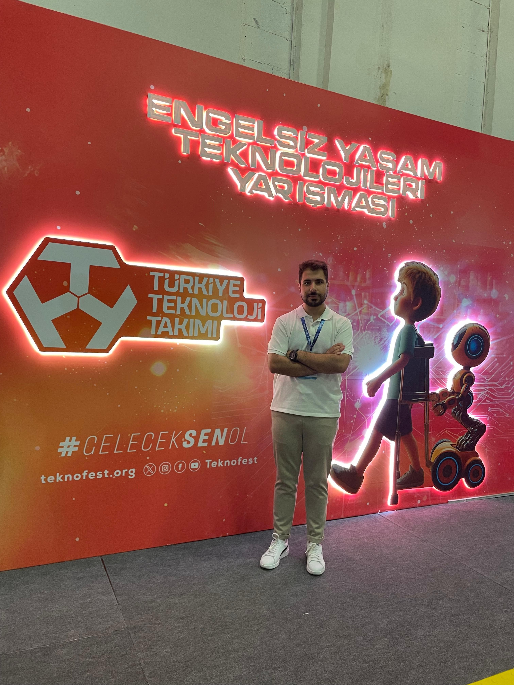
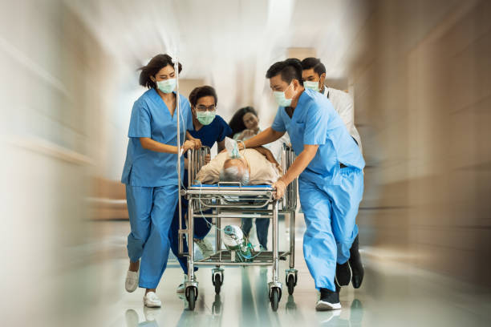
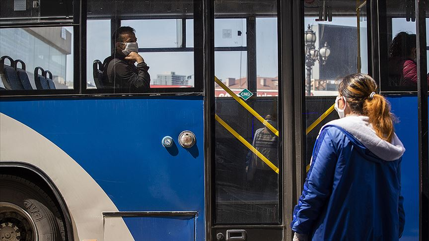

Projelerim
Bu sayfada yaptığım ve şu anda çalıştığım projeleri görebilirsiniz.

Engelli Yaşam Sistemi
Bu proje de asıl amacımız projenin özgün noktası engelli vatandaşlarımızın aralarındaki iletişimi kolaylaştırmak için yapılmış bir proje olmasıdır. Ama engelli vatandaşların normal bireylerle de iletişim kurmasını hedefledik. Bu projeyle teknofeste başvurduk ve birincilikle finale kaldık. Daha sonrasında Antalya da olan finallere katılarak projemizi sunma fırsatı yakaladık.

Acil Servis Uyarı Sistemi
Bu projem can kaybının daha az olması için geliştirdiğim projedir. Burda insanların acil durum seviyesini ölçüp ona göre daah aciliyetli insanları sağlık çalışanlarının da görmesini sağlamaktır.Ayrıca geliştireceğim mobil uygulama ile de sağlık çalışanlarının da hastanın neyi olduğu ve gereken şeyleri daha acil müdahele ile yapıp insan can kaybını azaltmayı hedeflemekteyiz.

Metropol Şehirlerde Yolcu Güvenliği
Bu proje şuan yürütmekte olduğum bir yapay zeka projesidir. Bu proje de metropol şehirlerde insanların toplu taşımaya daha rahat ve güvenilir bir şekilde binmesini hedeflemekteyiz. Ayrıca bu sorunu da çözerek toplu taşımanın daha yaygın olacağı ve kullanılan araba miktarının düşerek havanın da temiz olması demek anlamına geliyor. Makine öğrenmesi ve yapay zekayla birlikte toplu taşıma da hem insanların sinir ve gerginlik seviyesini ölçecek hem de o otobüsteki Karbondioksit oranı ve oksijen oranını da kullandığımız yapay zekayla tespit ederek insanlara daha güvenilir ve daha konforlu bir seyahat vadediyoruz.Bunu ise mobil uygulamaya aktarıp insanların daha kolay ulaşmasını hedefliyoruz.